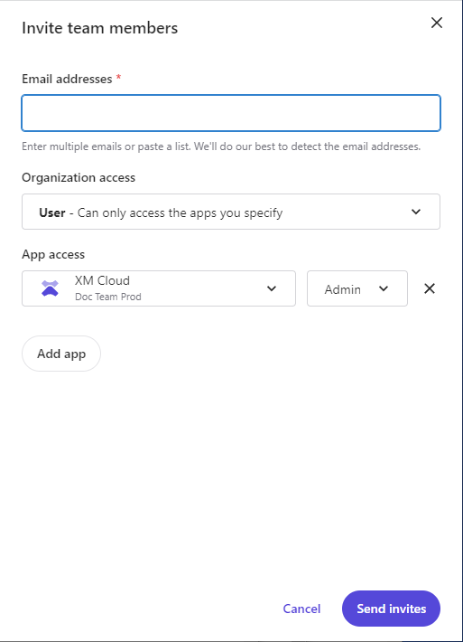

Invite team members to your Sitecore Cloud Portal organization
Invite team members to your organization and apps on Sitecore Cloud.
When your Sitecore Cloud Portal organization has been set up, you can invite team members and give them access to your organization's apps.
Note
To invite a team member to an organization, you must have an Organization Admin or Organization Owner role.
To invite a team member to your Sitecore Cloud Portal organization:
Log in to the Sitecore Cloud Portal.
If you are a member of multiple organizations, you must select the appropriate organization.
On the homepage, on the menu bar, click Admin, then on the Team members page, click Invite.
In the Invite team members dialog box, in the Email addresses field, enter the email address of the team member that you want to invite.
You can invite up to a hundred members at a time. To enter multiple email addresses, separate them with a comma, semicolon, or a space.
In the Organization access drop-down menu, to select the level of access that you want this member to have, click either Admin, User, or Owner.
If you select User, you can give the team member access to an app.
To give a team member access to an app, click Add app, then in the App access drop-down menus, click the relevant app and the level of access you want them to have in this app.
To give a team member access to multiple apps, click Add app and select the app and access level again.
If you have not deployed an app yet, you must update the access rights of the team member after you deploy an app.
Click Send.
An email message is sent to the team member informing them they have been invited to join your Sitecore Cloud Portal organization. You can manage your invitations on the Invitations page.